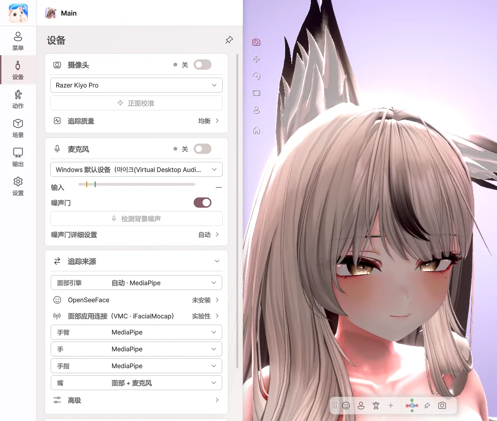

6. 设备#
在 设备 页面中设定用什么来驱动角色。这里设定的设备对所有角色通用。

摄像头#
| 项目 | 作用 |
|---|---|
| 摄像头 开关 | 开启 / 关闭摄像头追踪 |
| 摄像头列表 | 选择要使用的摄像头 |
| 正面校准 | 将当前面部朝向设为正面 |
| 追踪质量 | 流畅 / 均衡 / 节能 — 与游戏同时使用时请选择均衡或节能 |
摄像头出现问题时，此卡片上会显示原因（未连接、画面太暗、被其他应用占用等）。
麦克风#
| 项目 | 作用 |
|---|---|
| 麦克风 开关 | 开启 / 关闭麦克风（口型同步） |
| 麦克风列表 | 选择要使用的麦克风 |
| 输入 电平表 | 当前输入的音量 |
| 噪声门 | 防止背景噪声让嘴巴动起来 |
| 检测背景噪声 | 保持安静时测量噪声，自动调整噪声门 |
| 噪声门详细设置 | 自动 / 手动、开启与关闭阈值、响应时间 |
追踪来源#
为每个部位选择驱动来源。
| 项目 | 选项 |
|---|---|
| 面部引擎 | 自动 / MediaPipe / OpenSeeFace |
| 手臂 · 手 · 手指 | MediaPipe / Ultraleap / 关闭 |
| 嘴 | 面部 + 麦克风 / 面部 / 麦克风 / 关闭 |
| 高级 › 表情 · 头部 · 眼睛 | 面部 / 关闭 |
OpenSeeFace#
只追踪面部的另一种引擎。Avatar Live 中不包含此引擎，请自行下载并放在 安装文件夹之外，然后在 OpenSeeFace 文件夹 中指定。
面部应用连接（VMC · iFacialMocap）#
不使用摄像头，而是从其他应用或 iPhone 接收面部数据。
| 项目 | 作用 |
|---|---|
| 来源 | 无 / VMC / iFacialMocap |
| 开关 | 开始接收 |
| 端口 / iPhone地址 | 连接信息 |
| 允许本地网络中的设备 | 从同一网络中的手机或电脑接收 |
| 本机地址 · 复制 | 输入到 iFacialMocap 应用中的地址 |
| 正面校准 | 将当前头部朝向设为正面 |
Ultraleap 手部追踪#
使用 Leap Motion / Ultraleap 设备追踪手臂、手和手指。安装 Ultraleap 软件并连接设备后，请在追踪来源中选择 Ultraleap。
| 项目 | 作用 |
|---|---|
| 开关 · 状态 | 开启，确认设备和手是否被识别 |
| 校准（设备位置） | 设备位置和方向、手的大小、平滑 |
| 校准 | 将手放在键盘上方并点击，将该位置设为键盘位置 |
外部追踪（OSC · VMC）#
与本电脑上的其他应用连接。默认为关闭。
| 项目 | 作用 |
|---|---|
| OSC 输入（角色参数） | 用 VRChat 用的 OSC 工具更改角色参数 |
| VMC 输入（其他应用的身体与骨骼） | 从其他动作应用接收身体数据，选择要接收的 部位 |
| 将发送端的形态键直接写入角色 | 将接收到的表情直接应用 |
Ultraleap、iFacialMocap、OSC·VMC 预计能够正常运行，但这些设备和应用尚未在开发者环境中测试，属于 实验性功能。
VMC 输出 请参阅 第 9 章。